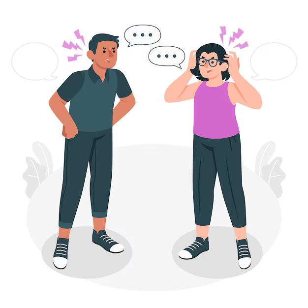
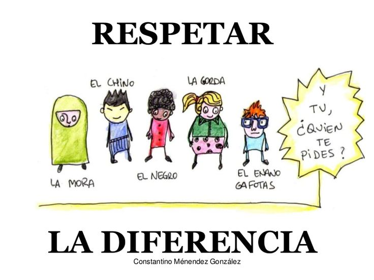

ASIGNATURA DE INGLÉS
I.E.D.E.M. TALLER INTEGRADO DE INGLES DOCENTE: RAUL CAÑAS
NOTA IMPORTANTE: SE EXTIENDE LA FECHA DE PRESENTACIÓN Y DE CIERRE DE LA PLATAFORMA PARA RECIBIR SU TRABAJO HASTA EL DIA 13 DE OCTUBRE. SE ATENDERÁN LAS CONSULTAS RESPECTIVAS DURANTE LAS CLASES.
INSTRUCCIONES: RECUERDE QUE EL CONTENIDO DE ESTA ACTIVIDAD VA PARA LA PAGINA WEB EN LA PESTAÑA DEL PERIODO 3.
EL TALLER SE RESUELVE COMO PARTE DEL TRABAJO INTEGRADO CON OTRAS ÁREAS.
SE DEBEN PRESENTAR EVIDENCIAS Y AVANCES DEL TRABAJO REALIZADO.
DURANTE LAS CLASES SE DISPONE DEL TIEMPO NECESARIO PARA TRABAJAR EN ESTA ACTIVIDAD.
TENER EN CUENTA LA FECHA FINAL DE CIERRE PARA LA ENTREGA DEL TRABAJO.
PARTE 1:
TRANSCRIBE CADA UNO DE LOS TEXTOS QUE E ENCUENTRAN A CONTINUACION CONSERVANDO SU ORDEN. LUEGO AGREGA UNA IMAGEN QUE CORRESPONDA A CADA UNO DE ELLOS.
ESCRIBE UNA FRASE EN PASADO SIMPLE Y UNA FRASE EN PRESENTE PERFECTO PARA CADA UNA DE LAS REGLAS QUE SE COMPARTEN EN EL DOCUMENTO.
ATENCION AL EJEMPLO:
I TREATED MY BROTHERS THE WAY THEY WANT TO BE TREATED.
I HAVE TREATED MY BROTHERS THE WAY THEY WANT TO BE TREATED
6 Simple principles to build peace in your community
If you switch on the TV news, open the newspaper or click onto a popular news website, there’s always news about a terrorist attack, war, ongoing conflict and a general lack of peace amongst different groups of people. In an increasingly globalised world, we should understand each other better, stand ever more united and strive for peace. Sadly, the truth is quite the opposite. There’s conflict in Israel/Palestine, Kashmir, Iraq, Afghanistan, Syria, all over the world in fact…
As individuals and citizens, how do we deal with this? How does this relate to us? How can we make positive changes to enable us to live in peace?
RULE #1: TREAT OTHERS THE WAY YOU WISH TO BE TREATED
The good old Golden Rule says it all: empathy, tolerance and peace. This principle teaches you to love yourself and love others. It spans cultures and faiths and is a universal age old concept which can’t fail!
TRATA A LOS DEMÁS COMO DESEAS SER TRATADO
La vieja regla de oro lo dice todo: empatía, tolerancia y paz. Este principio te enseña a amarte a ti mismo y
a amar a los demás. ¡Abarca culturas y religiones y es un concepto universal antiguo que no puede fallar!
RULE #2: LISTEN TO HEAR WHAT OTHERS HAVE TO SAY, NOT TO SPEAK
Engage in dialogue with an open mind and the real will to listen to others. Only then will you be able to understand each other and build bridges. Change cannot happen and peace cannot be established if people are unable to communicate with others; to listen to their experiences and views and show empathy, understanding and compassion.
ESCUCHE PARA OÍR LO QUE OTROS TIENEN QUE DECIR, NO PARA HABLAR
Entablar un diálogo con la mente abierta y la voluntad real de escuchar a los demás. Sólo
así podréis entenderos y tender puentes. El cambio no puede ocurrir y la paz no puede establecerse si las personas no pueden comunicarse con los demás; escuchar sus experiencias y puntos de vista y mostrar empatía, comprensión y compasión.

RULE #3: ACCEPT DIFFERENCE OF OPINION
We all have different opinions and we may not all agree on the same things. Building compromise and mutual
understanding is incredibly important. Sometimes we simply need to agree to disagree and recognise that there are different beliefs and forms of
expression other than our own.
ACEPTAR LA DIFERENCIA DE OPINIÓN
Todos tenemos opiniones diferentes y puede que no todos estemos de acuerdo en las mismas cosas.
Lograr compromisos y comprensión mutua es increíblemente importante. A veces simplemente necesitamos estar de acuerdo en estar en desacuerdo y reconocer que existen diferentes creencias y formas de
expresión distinta a la nuestra.

RULE #4: DO NOT FIGHT VIOLENCE WITH VIOLENCE
Violence is never the answer. Peace can only be brought through free will, dialogue, empathy and forgiveness. Do not stoop to same level as someone who is violent and
therefore continue the vicious cycle. This does not change anything.
NO COMBATIR LA VIOLENCIA CON VIOLENCIA
La violencia nunca es la respuesta. La paz sólo puede lograrse mediante el libre albedrío, el diálogo, la empatía y el perdón. No te rebajes al mismo nivel que alguien que es violento y
Por lo tanto, continúa el círculo vicioso. Esto no cambia nada.
RULE #5: ACCEPT THAT IDENTITY IS FLUID
Any one person can have multiple aspects to their identity. Identity comprises many elements such as nationality, cultural-linguistic origin, age and religious beliefs. Identity can and does change, taking on many new forms and means of personal expression as we learn new languages, move home, adopt new beliefs, marry into a different tradition and experience life! Do not put people into a box. Avoid categorising people according to and us vs. them narrative and remember: we are all singular individuals with unique experiences. Such approaches and narratives are highly divisive and unproductive.
ACEPTAR QUE LA IDENTIDAD ES FLUIDA
Cualquier persona puede tener múltiples aspectos de su identidad. La identidad comprende muchos
elementos como la nacionalidad, el origen cultural-lingüístico, la edad y las creencias religiosas.
La identidad puede cambiar y de hecho cambia, adoptando muchas formas y medios nuevos de
expresión personal a medida que aprendemos nuevos idiomas, nos mudamos a casa, adoptamos nuevas creencias, nos casamos con una tradición diferente y experimentamos la vida. No pongas a la gente en una caja. Evite categorizar a las personas según la narrativa "nosotros versus ellos" y recuerde: todos somos individuos singulares con experiencias únicas.
Estos enfoques y narrativas son muy divisivos e improductivos.
RULE #6: AVOID STEREOTYPES
Take people for the individuals they are. Avoid misconceptions, stereotypes and toxic narratives and get
to know a person instead. This will avoid offence, misunderstandings and ultimately help you to create a real bond with others based on true understanding, empathy and trust. After all, no one likes to be judged – especially from the outside
EVITE LOS ESTEREOTIPOS
Tome a las personas por los individuos que son. Evite conceptos erróneos, estereotipos y narrativas tóxicas y,
en su lugar, conozca a una persona. Esto evitará ofensas, malentendidos y, en última instancia, le ayudará a crear un vínculo real con los demás basado en la verdadera comprensión, empatía y confianza. Al fin y al cabo, a nadie
le gusta que lo juzguen, especialmente desde fuera.
PARTE 2: PREPARA CON TUS COMPAÑEROS DE EQUIPO UN VIDEO DONDE EXPLIQUES ALGUNO DE LOS TEMAS TRABAJADOS EN CLASE Y DE LOS CUALES SE DEJAN LAS OPCIONES QUE SE PROPONEN EN LA LISTA A CONTINUACIÓN:
1.PASADO SIMPLE: FORMAS AFIRMATIVA, NEGATIVA E INTERROGATIVA. EXPLICAR E ILUSTRAR CON ALGUNOS EJEMPLOS SENCILLOS
2.VERBOS REGULARES E IRREGULARES EN SUS FORMAS DE PRESENTE, PASADO Y PARTICIPIO PASADO.
3.PRESENTE PERFECTO EN FORMA AFIRMATIVA, NEGATIVA E INTERROGATIVA. EXPLICAR E ILUSTRAR CON ALGUNOS EJEMPLOS SENCILLOS
4.EXPLICAR LA FUNCION DE LOS SIGUIENTES VERBOS MODALES DANDO ALGUNOS EJEMPLOS SENCILLOS: CAN – COULD / MAY – MIGHT / SHOULD /
5.CONDICIONAL CERO: ESTA FORMA DE EXPRESARSE EN INGLES TIENE UNA CONDICION ESPECIAL Y ES QUE SE UTILIZA LA EXPRESIÓN “IF” COMO CONECTOR DE DOS FRASES EN LAS QUE UNA ES UNA CONDICIÓN PARA QUE SE CUMPLA LA OTRA. LAS DOS FRASES DEBEN ESTAR EN PRESENTE SIMPLE:
POR EJEMPLO: SI VIENES TEMPRANO TE INVITO A CINE
CLAUSULA CON IF (PRESENTE SIMPLE)
RESULTADO (PRESENTE SIMPLE)
IF YOU COME EARLY
I INVITE YOU TO THE MOVIES
PARTE 3: ESTUDIA CON UNO DE TUS COMPAÑEROS DE EQUIPO EL SIGUIENTE DIALOGO. PRACTICALO Y REALIZA LA GRABACIÓN DEL AUDIO PARA AGREGARLO COMO PARTE DE LAS ACTIVIDADES QUE VAN PARA LA PAGINA WEB
Jim: Hello, Karen, welcome back! How was your holiday?
Karen: It was great!
Jim: Where did you go?
Karen: I went to Rome.
Jim: Oh, that’s interesting. How was the weather?
Karen: It was nice. Warm and sunny.
Jim: Did you like the food?
Karen: Of course, it was wonderful. The pasta was amazing, and the pizza was incredible.
Jim: Did you go by yourself?
Karen: No, I didn’t. I went with my friend Jessica. She has some friends living there.
Jim: Did you see all the famous monuments?
Karen: Yes, I did. I saw the Coliseum, and the Fontana di Trevi, and all the rest. It’s such a beautiful city!
Jim: Did you visit the Vatican City?
Karen: Yes, but it was very crowded. I walked around Saint Peter’s Square and looked at all the beautiful architecture.
Jim: Did you have a good time?
Karen: Yes, I did. I hope to go back some day.
Jim: How did you get there?
Karen: I got there by plane. The flight only takes a couple of hours.
Jim: Was it expensive?
Karen: The ticket wasn’t very expensive, but Italy is generally more expensive than Spain
Karen: And you, Jim? Did you go on holiday yet?
Jim: No, not yet. But I’m going to Turkey next week!
Karen: Very good Jim. Ah it’s time to go home. See you tomorrow.
Jim: Ok Karen. Have a nice rest of the day. See you then.
NOTA FINAL: REALIZA LA TRADUCCIÓN DEL DIALOGO.
RULE #1: TREAT OTHERS THE
WAY YOU WISH TO BE TREATED
The good old Golden Rule says it all:
empathy, tolerance and peace. This
principle teaches you to love yourself
and love others. It spans cultures and
faiths and is a universal age old
concept which can’t fail!
REGLA #1: TRATAR A LOS DEMÁS
MANERA EN QUE DESEA SER TRATADO
La vieja regla de oro lo dice todo:
empatía, tolerancia y paz. Este
El principio te enseña a amarte a ti mismo.
y amar a los demás. Abarca culturas y
religiones y es una edad universal
¡Concepto que no puede fallar!
- I was always put myself in other people's shoes.
Siempre me puse en el lugar de los demas
- I has always put myself in other people's shoes.
Siempre me he puesto en el lugar de los demás.
RULE #2: LISTEN TO HEAR WHAT OTHERS HAVE TO SAY,
NOT TO SPEAK
Engage in dialogue with an open mind and the real will to listen to
others. Only then will you be able to understand each other and
build bridges. Change cannot happen and peace cannot be
established if people are unable to communicate with others; to
listen to their experiences and views and show empathy,
understanding and compassion.
REGLA #2: ESCUCHE LO QUE OTROS TIENEN QUE DECIR,
NO HABLAR
Entablar un diálogo con la mente abierta y la voluntad real de escuchar
otros. Sólo así podréis entenderos y
construir puentes. El cambio no puede ocurrir y la paz no puede existir
establecido si las personas no pueden comunicarse con otros; a
escuchar sus experiencias y puntos de vista y mostrar empatía,
comprensión y compasión.
- I wasn't never exclude anyone and I always listen to everyone very carefully.
Nunca excluí a nadie y siempre escucho a todos con mucha atención.
- I have never exclude anyone and I always listen to everyone very carefully.
Nunca he excluido a nadie y siempre escucho a todos con mucha atención.
RULE #3: ACCEPT DIFFERENCE OF OPINION
We all have different opinions and we may not all
agree on the same things. Building compromise and
mutual understanding is incredibly important
Sometimes we simply need to agree to disagree and
recognise that there are different beliefs and forms of
expression other than our own.
REGLA #3: ACEPTAR LA DIFERENCIA DE OPINIÓN
Todos tenemos opiniones diferentes y puede que no todos
coincidimos en las mismas cosas. Construir compromisos y
el entendimiento mutuo es increíblemente importante
A veces simplemente necesitamos estar de acuerdo en no estar de acuerdo y
Reconocer que existen diferentes creencias y formas de
expresión distinta a la nuestra.
- He was always thought that accepting the opinion of others is the best
Siempre se pensó que aceptar la opinión de los demás es lo mejor.
- he has always thought that accepting the opinion of others is the best
siempre ha pensado que aceptar la opinión de los demás es lo mejor
RULE #4: DO NOT FIGHT VIOLENCE WITH
VIOLENCE
Violence is never the answer. Peace can only be
brought through free will, dialogue, empathy and forgiveness. Do not stoop to same level as someone
who is violent and therefore continue the vicious
cycle. This does not change anything.
REGLA #4: NO COMBATE LA VIOLENCIA CON
VIOLENCIA
La violencia nunca es la respuesta. La paz sólo puede ser
logrado a través del libre albedrío, el diálogo, la empatía y el perdón. No te rebajes al mismo nivel que alguien
que es violento y por lo tanto continúa con la crueldad
ciclo. Esto no cambia nada.
- They were always liked to solve things by talking and not with violence.
Siempre les gustó resolver las cosas hablando y no con violencia.
- They have always liked to solve things by talking and not with violence.
Siempre les ha gustado solucionar las cosas hablando y no con violencia.
RULE #5: ACCEPT THAT IDENTITY IS FLUID
Any one person can have multiple aspects to their identity. Identity
comprises many elements such as nationality, cultural-linguistic
origin, age and religious beliefs. Identity can and does change,
taking on many new forms and means of personal expression as we
learn new languages, move home, adopt new beliefs, marry into a
different tradition and experience life! Do not put people into a box.
Avoid categorising people according to and us vs.
them narrative and remember: we are all singular individuals with
unique experiences. Such approaches and narratives are highly
divisive and unproductive.
REGLA #5: ACEPTAR QUE LA IDENTIDAD ES FLUIDA
Cualquier persona puede tener múltiples aspectos de su identidad. Identidad
comprende muchos elementos como la nacionalidad, la cultura-lingüística
origen, edad y creencias religiosas. La identidad puede cambiar y cambia,
adoptando muchas formas y medios nuevos de expresión personal a medida que
aprender nuevos idiomas, mudarse a casa, adoptar nuevas creencias, casarse con una
¡Tradición diferente y experiencia de vida! No pongas a la gente en una caja.
Evite categorizar a las personas según y nosotros vs.
ellos narrativa y recuerda: todos somos individuos singulares con
experiencias únicas. Estos enfoques y narrativas son altamente
divisivo e improductivo.
- They were never respected the identity of others.
Nunca se respetó la identidad de los demás.
- They has never respected the identity of others.
Nunca han respetado la identidad de los demás.
RULE #6: AVOID STEREOTYPES
Take people for the individuals they
are. Avoid misconceptions,
stereotypes and toxic narratives and
get to know a person instead. This
will avoid offence,
misunderstandings and ultimately
help you to create a real bond with
others based on true understanding,
empathy and trust. After all, no one
likes to be judged – especially from
the outside
REGLA #6: EVITE LOS ESTEREOTIPOS
Tome a las personas por los individuos que
son. Evite conceptos erróneos,
estereotipos y narrativas tóxicas y
en su lugar, conozca a una persona. Este
evitará la ofensa,
malentendidos y finalmente
ayudarle a crear un vínculo real con
otros basados en la verdadera comprensión,
empatía y confianza. Después de todo, nadie
le gusta que lo juzguen, especialmente desde
el exterior
- were you never judged others without knowing them?
¿Nunca juzgaste a los demás sin conocerlos?
- you have never judged others without knowing them?
¿Nunca has juzgado a los demás sin conocerlos?